library(tidyverse)
library(palmerpenguins)Introdução ao R
Visualização de dados
Pacotes
Carregue os pacotes abaixo:
Bancos de dados utilizados
penguins
Medidas de tamanho para pinguins forrageadores adultos perto da Estação Palmer, Antártida. Inclui medidas para espécies de pinguins, ilha no Arquipélago Palmer, tamanho (comprimento da nadadeira, massa corporal, dimensões do bico) e sexo.
- Formato: um banco de dados com 344 observações e 8 variáveis
species: espécies de pinguins (Adélie, Chinstrap e Gentoo)island: ilha no arquipélago de Palmer, Antártida (Biscoe, Dream ou Torgersen)bill_length_mm: comprimento do bico em milímetrosflipper_length_mm: comprimento da nadadeira em milímetrosbody_mass_g: massa corporal em gramassex: sexo do pinguin (macho ou fêmea)year: ano em que foi realizado o estudo
Uma olhada em penguins
| species | island | bill_length_mm | bill_depth_mm | flipper_length_mm | body_mass_g | sex | year |
|---|---|---|---|---|---|---|---|
| Gentoo | Biscoe | 50.2 | 14.3 | 218 | 5700 | male | 2007 |
| Adelie | Biscoe | 37.6 | 17.0 | 185 | 3600 | female | 2008 |
| Adelie | Dream | 41.1 | 19.0 | 182 | 3425 | male | 2007 |
| Gentoo | Biscoe | 44.9 | 13.3 | 213 | 5100 | female | 2008 |
| Gentoo | Biscoe | 50.5 | 15.9 | 222 | 5550 | male | 2008 |
| Adelie | Torgersen | 36.7 | 19.3 | 193 | 3450 | female | 2007 |
| Gentoo | Biscoe | 47.2 | 15.5 | 215 | 4975 | female | 2009 |
| Adelie | Biscoe | 38.2 | 18.1 | 185 | 3950 | male | 2007 |
| Chinstrap | Dream | 50.2 | 18.8 | 202 | 3800 | male | 2009 |
| Adelie | Torgersen | 40.9 | 16.8 | 191 | 3700 | female | 2008 |
penguins
diamonds
Um conjunto de dados contendo os preços e outros atributos de quase 54.000 diamantes.
- Formato: Um banco de dados com 53940 observações e algumas variáveis. Vamos usar:
price: preço em dólares americanoscarat: peso do diamante (quilates)
Uma olhada em diamonds
| carat | price |
|---|---|
| 0.3 | 763.0 |
| 0.3 | 526.0 |
| 1.0 | 5,093.0 |
| 0.5 | 1,607.0 |
| 0.6 | 1,270.0 |
| 1.1 | 4,021.0 |
| 0.7 | 2,263.0 |
| 0.3 | 723.0 |
| 1.0 | 5,006.0 |
| 0.3 | 789.0 |
diamonds
Introdução
- ggplot2: grammar of graphics (gramática dos gráficos)
- Sistema coerente para descrever e construir gráficos

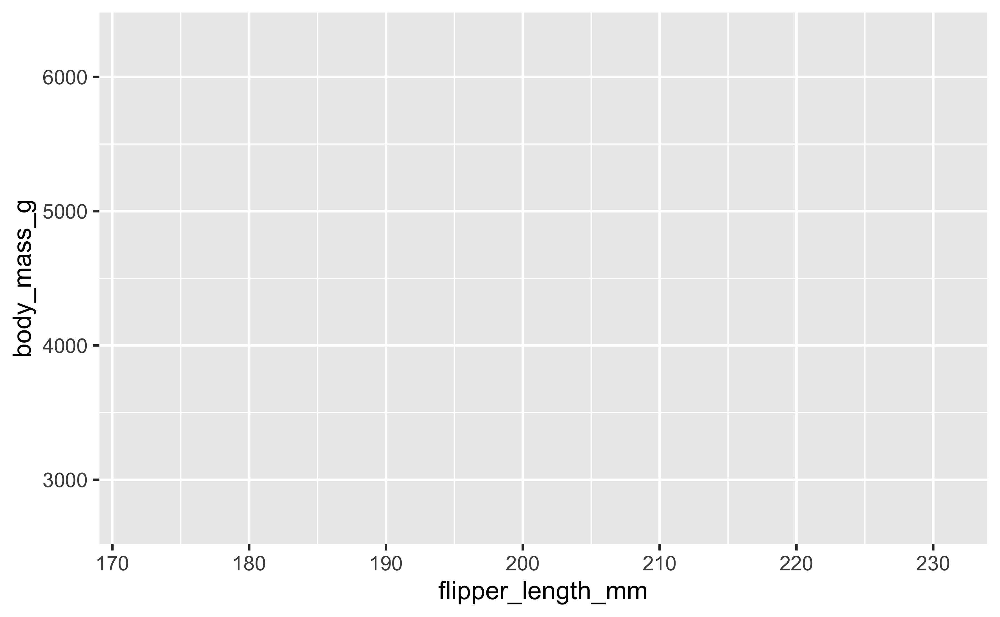
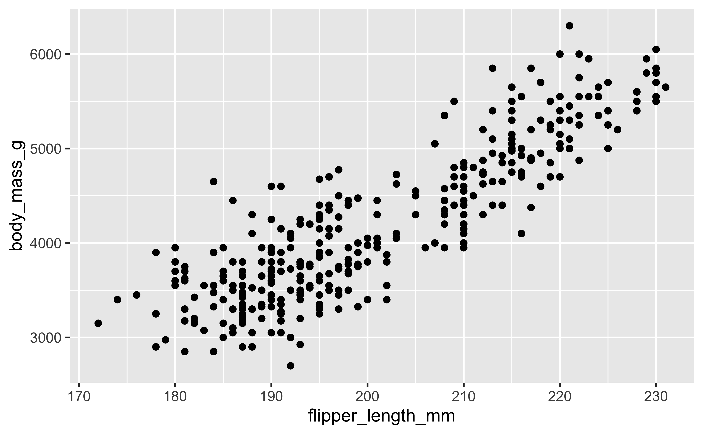
Primeiros Passos
- Os pinguins com nadadeiras mais longas pesam mais ou menos que os pinguins com nadadeiras mais curtas?
- Como é a relação entre o comprimento da nadadeira e a massa corporal? É positivo? Negativo? Linear? Não linear?
- A relação varia de acordo com a espécie do pinguim?
- O que nos diz a ilha onde mora o pinguim?
- Vamos criar visualizações que podemos usar para responder a essas perguntas.
Objetivo final

Criando um ggplot camada por camada
Banco de dados
data
ggplot(
data = penguins
)Representação visual das informações
mapping e aes(aesthetics - estética)

Como representar as informações?
- geom: o objeto geométrico que um gráfico usa para representar dados
- Funções que sempre começam com
geom_ - Gráficos de barras:
geom_bar() - Gráficos de linhas:
geom_line() - Gráficos de caixa de bigodes:
geom_boxplot() - Gráficos de dispersão:
geom_point()
geom_point()

Adicionando uma estética (aesthetics)
Adicionando uma estética (aesthetics)
shape
Adicionando uma camada (layer)
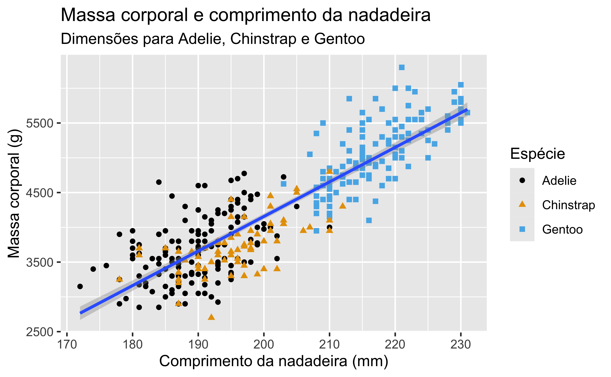
Adicionando uma camada (layer)
Adicionando rótulos (labels)
ggplot(
data = penguins,
mapping = aes(x = flipper_length_mm,
y = body_mass_g)
) +
geom_point(
aes(color = species,
shape = species)
) +
geom_smooth(
method = "lm"
) +
labs(
title = "Massa corporal e comprimento da nadadeira",
subtitle = "Dimensões para Adelie, Chinstrap e Gentoo",
x = "Comprimento da nadadeira (mm)",
y = "Massa corporal (g)",
color = "Espécie",
shape = "Espécie"
)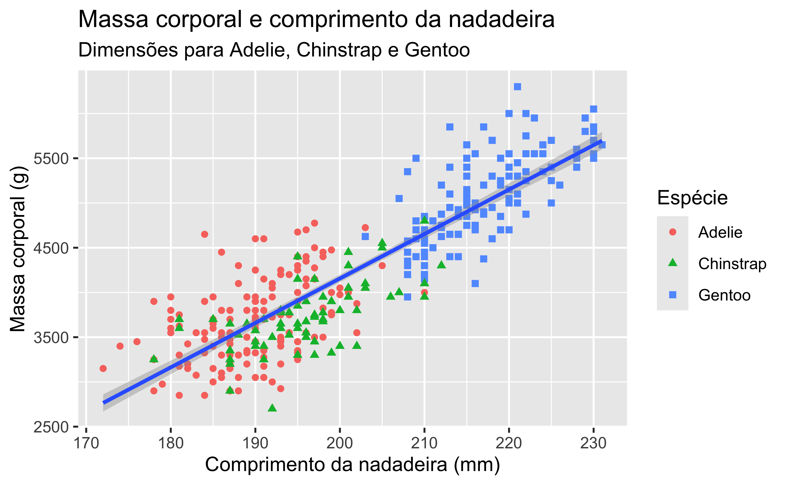
Cores para daltônicos
ggplot(
data = penguins,
mapping = aes(x = flipper_length_mm,
y = body_mass_g)
) +
geom_point(
aes(color = species,
shape = species)
) +
geom_smooth(
method = "lm"
) +
labs(
title = "Massa corporal e comprimento da nadadeira",
subtitle = "Dimensões para Adelie, Chinstrap e Gentoo",
x = "Comprimento da nadadeira (mm)",
y = "Massa corporal (g)",
color = "Espécie",
shape = "Espécie"
) +
scale_color_colorblind()Cores para daltônicos

Exercício
Qual o número de linhas no banco de dados dos penguins? Quantas colunas?
Resposta
glimpse(penguins)
#> Rows: 344
#> Columns: 8
#> $ species <fct> Adelie, Adelie, Adelie, Adelie, Adelie, Adelie, A…
#> $ island <fct> Torgersen, Torgersen, Torgersen, Torgersen, Torge…
#> $ bill_length_mm <dbl> 39.1, 39.5, 40.3, NA, 36.7, 39.3, 38.9, 39.2, 34.…
#> $ bill_depth_mm <dbl> 18.7, 17.4, 18.0, NA, 19.3, 20.6, 17.8, 19.6, 18.…
#> $ flipper_length_mm <int> 181, 186, 195, NA, 193, 190, 181, 195, 193, 190, …
#> $ body_mass_g <int> 3750, 3800, 3250, NA, 3450, 3650, 3625, 4675, 347…
#> $ sex <fct> male, female, female, NA, female, male, female, m…
#> $ year <int> 2007, 2007, 2007, 2007, 2007, 2007, 2007, 2007, 2…Resposta
nrow(penguins)
#> [1] 344
ncol(penguins)
#> [1] 8Exercício
Faça um gráfico de dispersão de bill_depth_mm vs. bill_length_mm. Ou seja, faça um gráfico de dispersão com bill_depth_mm no eixo y e bill_length_mm no eixo x. Descreva a relação entre essas duas variáveis.
bill = bico
Resposta
ggplot(
data = penguins,
aes(x = bill_length_mm,
y = bill_depth_mm)
) +
geom_point() +
geom_smooth(
method = "lm"
)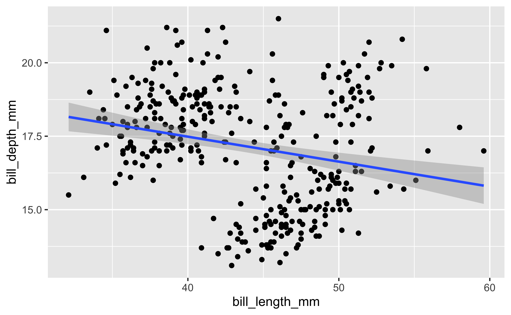
Exercício
O que acontece se você fizer um gráfico de dispersão de species versus bill_depth_mm? O que poderia ser uma melhor escolha de geom?
Resposta
ggplot(
data = penguins,
aes(x = species,
y = bill_depth_mm)
) +
geom_point()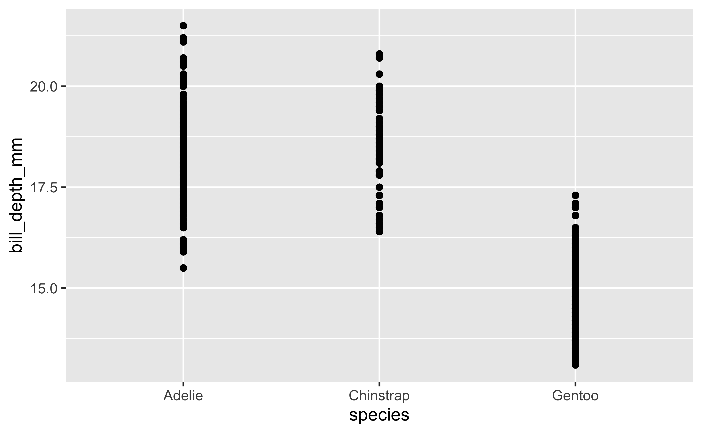
Resposta
ggplot(
data = penguins,
aes(x = species,
y = bill_depth_mm)
) +
geom_boxplot()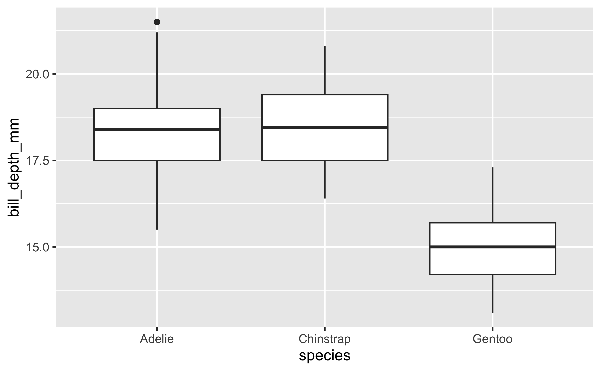
Exercício
Recrie a seguinte visualização. Para qual estética o bill_depth_mm deve ser mapeado? E deve ser mapeado no nível global ou no nível do geom?

Resposta

Chamadas do ggplot2
datamapping(aes(x = ... , y = ...)
ggplot(
data = penguins,
mapping = aes(x = flipper_length_mm,
y = body_mass_g)
) +
geom_point()ggplot(
penguins,
aes(flipper_length_mm,
body_mass_g)
) +
geom_point()penguins |>
ggplot(
aes(flipper_length_mm,
body_mass_g)
) +
geom_point()
Distribuições
Visualizando distribuições
- A visualização vai depender do tipo de variável
- Categórica
- Numérica
Variável categórica
Gráfico de Barras: geom_bar()
Altura das barras: número de observações em cada valor de x
penguins |>
ggplot(
aes(species)
) +
geom_bar()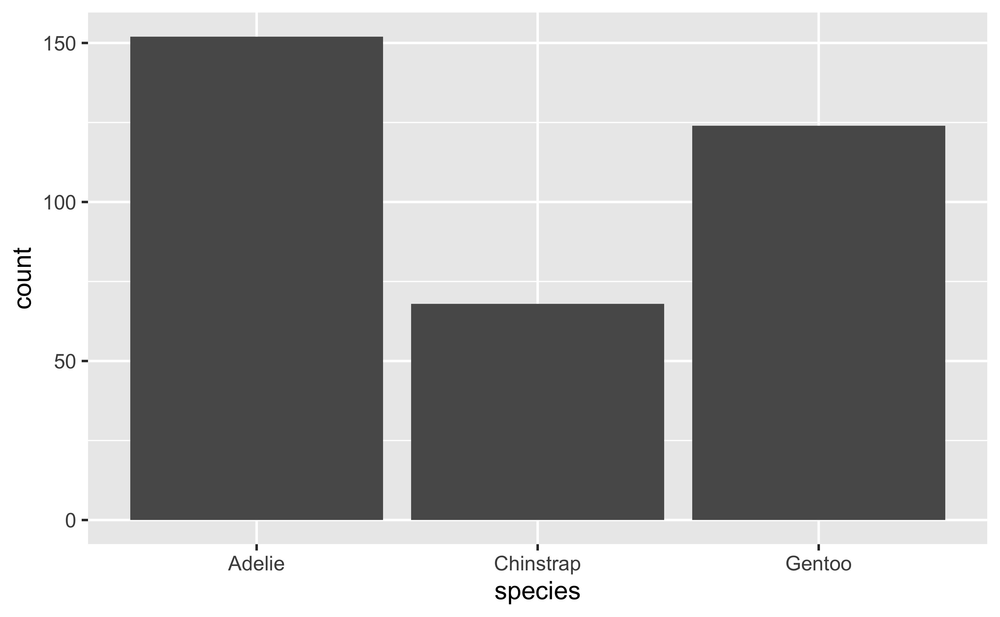
Gráfico de Barras - geom_bar(): variáveis ordendas pela frequência (decrescente)
penguins |>
ggplot(
aes(fct_infreq(species))
) +
geom_bar()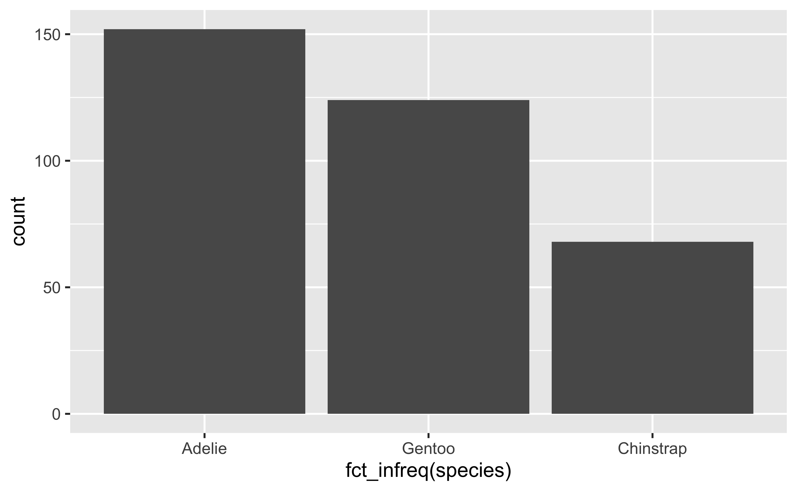
Gráfico de Barras - geom_bar(): variáveis ordendas pela frequência (crescente)
penguins |>
ggplot(
aes(fct_infreq(species) |> fct_rev())
) +
geom_bar()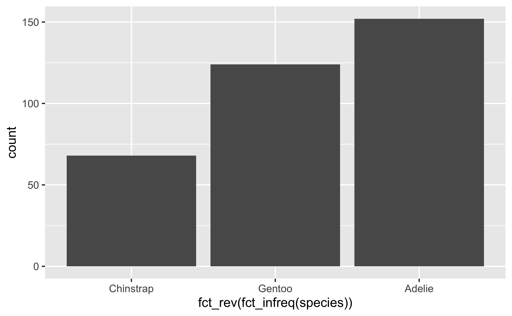
Gráfico de Barras - geom_bar(): proporções
library(scales)
penguins |>
ggplot(
aes(fct_infreq(species),
y = after_stat(count/sum(count)),
fill = species)
) +
geom_bar() +
geom_text(
aes(label = percent(after_stat(count/sum(count)))),
stat = "count",
nudge_y = 0.02
) +
theme(
legend.position = "none"
) +
scale_y_continuous(
labels = percent
) +
scale_fill_colorblind() +
labs(
x = "Espécies", y = NULL
)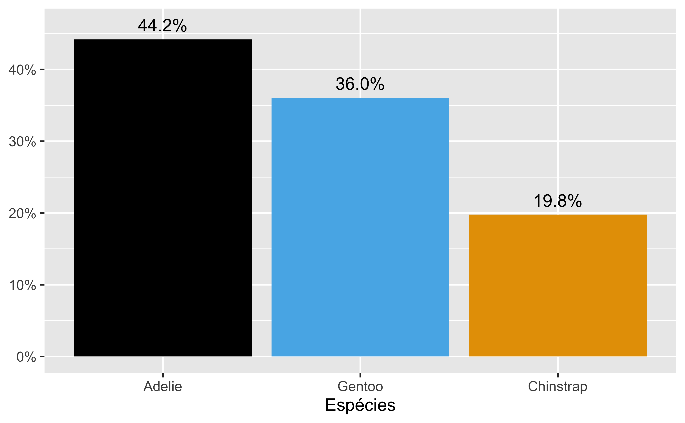
Gráfico de Barras - geom_bar(): proporções
penguins |>
ggplot(
aes(fct_infreq(species),
y = after_stat(count/sum(count)),
fill = species)
) +
geom_bar() +
geom_text(
aes(label = percent(after_stat(count/sum(count)))),
stat = "count",
nudge_y = 0.03
) +
theme(
legend.position = "none"
) +
scale_y_continuous(
labels = percent, limits = c(0, 1)
) +
scale_fill_colorblind() +
labs(
x = "Espécies",
y = NULL
)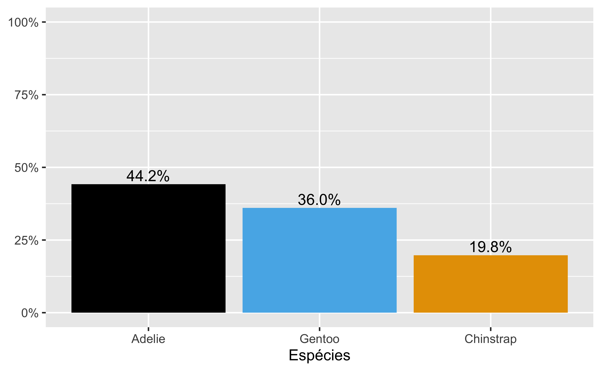
Variável numérica
Histograma: geom_histogram()
- Divide o eixo x em caixas igualmente espaçadas
- Usa a altura de uma barra para exibir o número de observações em cada caixa
penguins |>
ggplot(
aes(body_mass_g)
) +
geom_histogram(
binwidth = 200,
color = "white"
)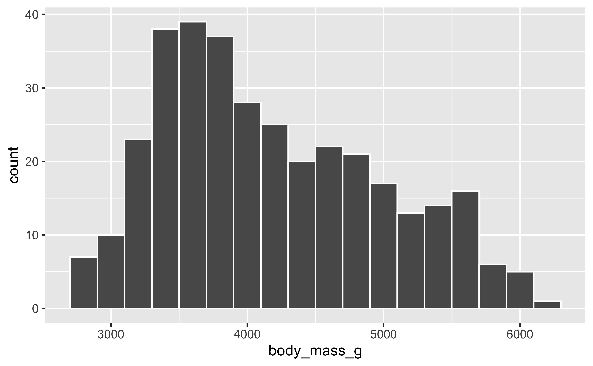
Histograma -geom_histogram(): binwidth()
- Define a largura dos intervalos
penguins |>
ggplot(
aes(x = body_mass_g)) +
geom_histogram(
binwidth = 20
)
penguins |>
ggplot(
aes(body_mass_g)) +
geom_histogram(
binwidth = 2000
)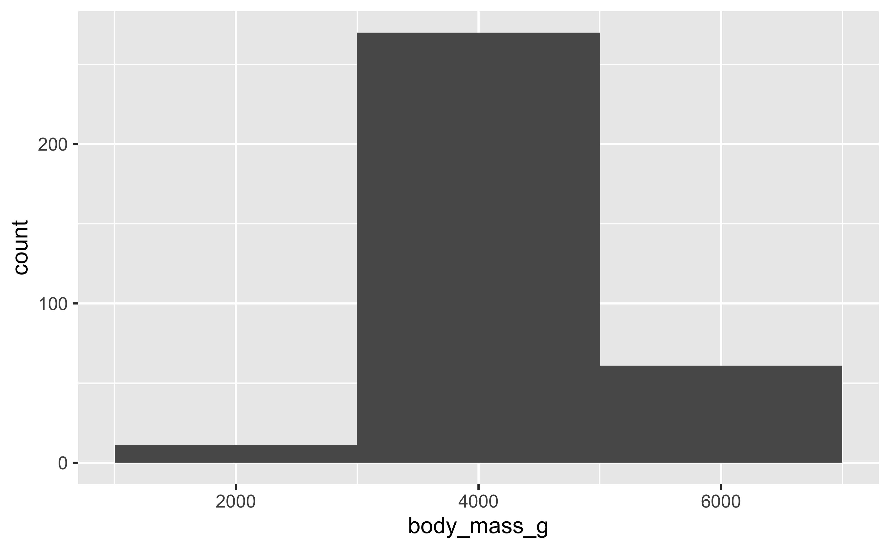
Exercícios
Faça um gráfico de barras das espécies (species) de pinguins, onde você atribui espécies (species) ao eixo y. Como esse gráfico é diferente?
Resposta
penguins |>
ggplot(
aes(y = species)) +
geom_bar()Exercícios
Faça um histograma da variável quilate (carat) no conjunto de dados de diamonds (diamantes) Experimente diferentes larguras de caixa (bin). Qual largura de bin revela os padrões mais interessantes?
Resposta
diamonds |>
ggplot(
aes(carat)) +
geom_histogram()diamonds |>
ggplot(
aes(carat)) +
geom_histogram(
bins = 100
)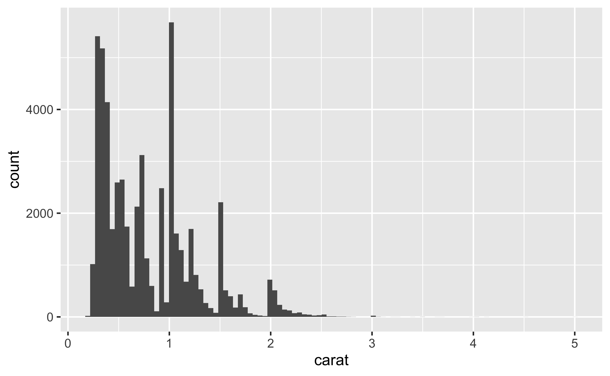
Relacionamentos entre variáveis
Visualizando relacionamentos
- 2 variáveis
- categórica x numérica
- categórica x categórica
- numérica x numérica
- 3 ou mais variáveis
Variáveis numéricas e categóricas
- Diagrama de caixa:
geom_boxplot()- Atalho visual para medidas de posição (percentis) que descrevem uma distribuição
- Útil para identificar possíveis outliers
geom_boxplot()
penguins |>
filter(species == "Chinstrap") |>
ggplot(
aes(species, body_mass_g)
) +
geom_boxplot()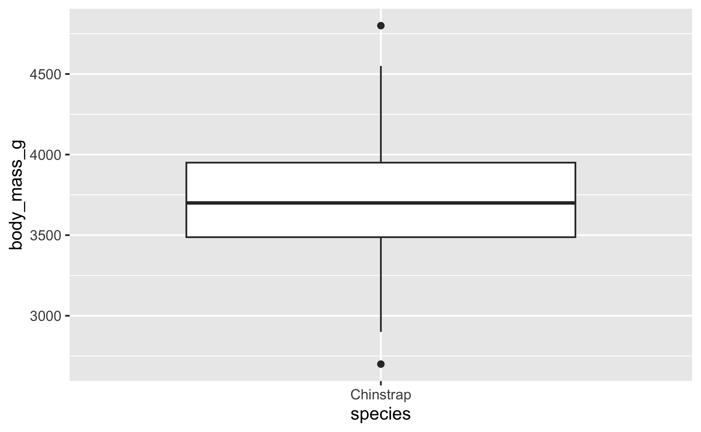
Duas variáveis categóricas
- Relacionamento entre ilha (
island) e espécie (species)- Distribuição das espécies dentro de cada ilha
Tabela de Frequência
#> # A tibble: 3 × 5
#> island Adelie Gentoo Chinstrap total_island
#> <fct> <int> <int> <int> <int>
#> 1 Biscoe 44 124 NA 168
#> 2 Dream 56 NA 68 124
#> 3 Torgersen 52 NA NA 52Gráfico de barras emplilhados (stacked bar plots)
penguins |>
ggplot(
aes(island, fill = species)) +
geom_bar()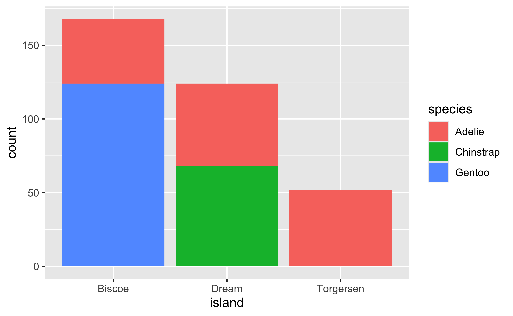
Gráfico de frequência relativa (relative frequency plot)
position = "fill"- Útil para comparar a distribuição de espécies nas ilhas
- Não é afetado pelo número desigual de pinguins nas ilhas
penguins |>
ggplot(
aes(island, fill = species))+
geom_bar(
position = "fill"
)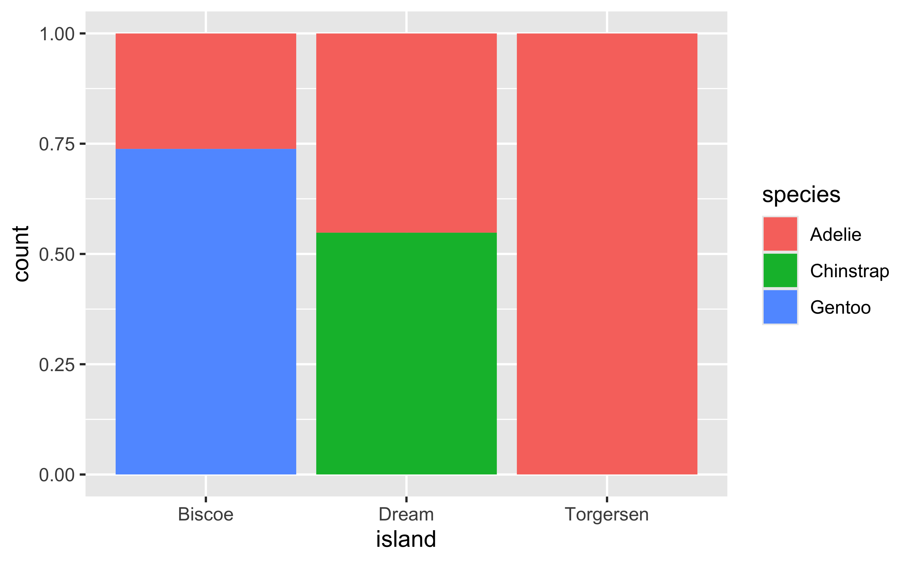
Grafico de barras
position = "dodge"
penguins |>
ggplot(
aes(island, fill = species)) +
geom_bar(
position = "dodge"
)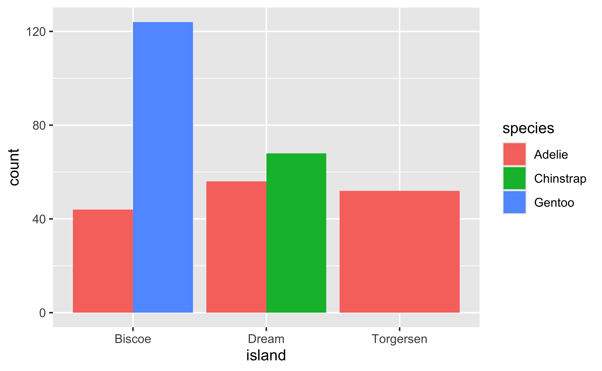
Duas variáveis numéricas
geom_point()geom_smooth()
penguins |>
ggplot(
aes(flipper_length_mm, body_mass_g)) +
geom_point() +
geom_smooth(
method = "lm"
)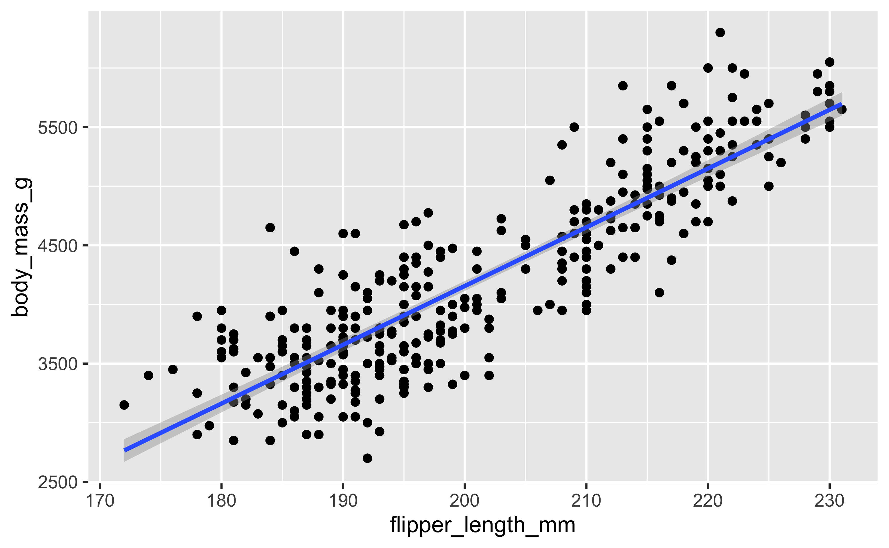
Três ou mais variáveis
- Podem ser mapeadas para diferntes estéticas (aesthetics)
color= espécies (species)shape= ilhas (island)
penguins |>
ggplot(
aes(flipper_length_mm, body_mass_g)
) +
geom_point(aes(color = species, shape = island))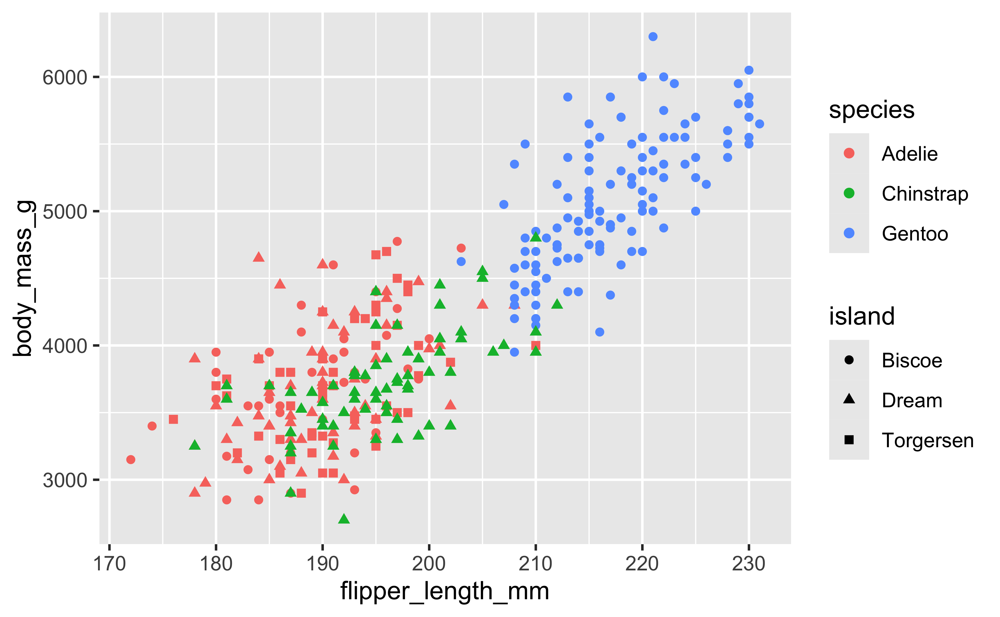
facets
- Muitas variáveis nas estéticas pode deixar o gráfico confuso
facet_
penguins |>
ggplot(
aes(flipper_length_mm, body_mass_g)) +
geom_point(
aes(color = species, shape = species)
) +
facet_wrap(~ island)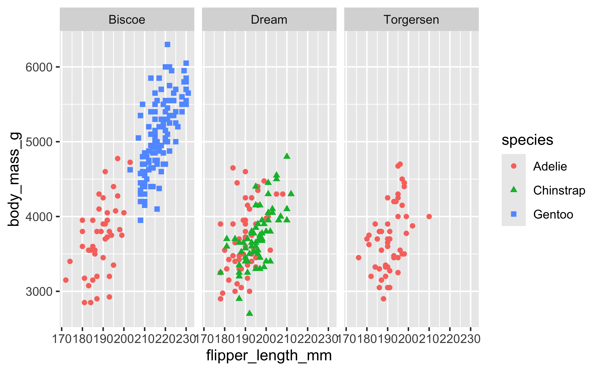
Series temporais
geom_line()geom_point()
gapminder |>
summarise(
lifeExpm = mean(lifeExp),
.by = c(continent, year)
) |>
ggplot(
aes(year, lifeExpm, color = continent)
) +
geom_line() +
geom_point() +
scale_color_colorblind()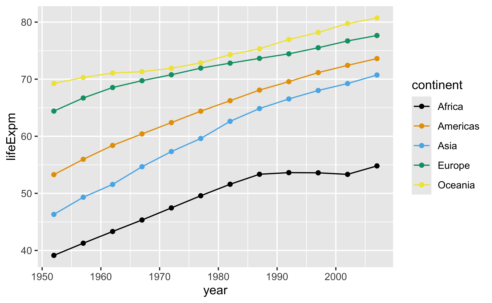
Exercícios
O banco de dados mpg que acompanha o pacote ggplot2 contém 234 observações coletadas pela Agência de Proteção Ambiental dos EUA em 38 modelos de carros. Quais variáveis em mpg são categóricas? Quais variáveis são numéricas? (Dica: digite ?mpg para ler a documentação do banco de dados.) Como você pode ver essas informações ao executar mpg?
Reposta
glimpse(mpg)
#> Rows: 234
#> Columns: 11
#> $ manufacturer <chr> "audi", "audi", "audi", "audi", "audi", "audi", "audi"…
#> $ model <chr> "a4", "a4", "a4", "a4", "a4", "a4", "a4", "a4 quattro"…
#> $ displ <dbl> 1.8, 1.8, 2.0, 2.0, 2.8, 2.8, 3.1, 1.8, 1.8, 2.0, 2.0,…
#> $ year <int> 1999, 1999, 2008, 2008, 1999, 1999, 2008, 1999, 1999, …
#> $ cyl <int> 4, 4, 4, 4, 6, 6, 6, 4, 4, 4, 4, 6, 6, 6, 6, 6, 6, 8, …
#> $ trans <chr> "auto(l5)", "manual(m5)", "manual(m6)", "auto(av)", "a…
#> $ drv <chr> "f", "f", "f", "f", "f", "f", "f", "4", "4", "4", "4",…
#> $ cty <int> 18, 21, 20, 21, 16, 18, 18, 18, 16, 20, 19, 15, 17, 17…
#> $ hwy <int> 29, 29, 31, 30, 26, 26, 27, 26, 25, 28, 27, 25, 25, 25…
#> $ fl <chr> "p", "p", "p", "p", "p", "p", "p", "p", "p", "p", "p",…
#> $ class <chr> "compact", "compact", "compact", "compact", "compact",…Exercícios
Faça um gráfico de dispersão de hwy vs. displ usando o banco de dados mpg Em seguida, mapeie uma terceira variável numérica para color, depois para size, então para color e size ao mesmo tempo, então para shape. Como essas estéticas se comportam de maneira diferente para variáveis categóricas e numéricas?
Resposta
p <- mpg |>
ggplot(
aes(hwy, displ)
) +
geom_point() +
geom_smooth(
method = "lm", se = F
)
pResposta
p + geom_point(aes(color = cty))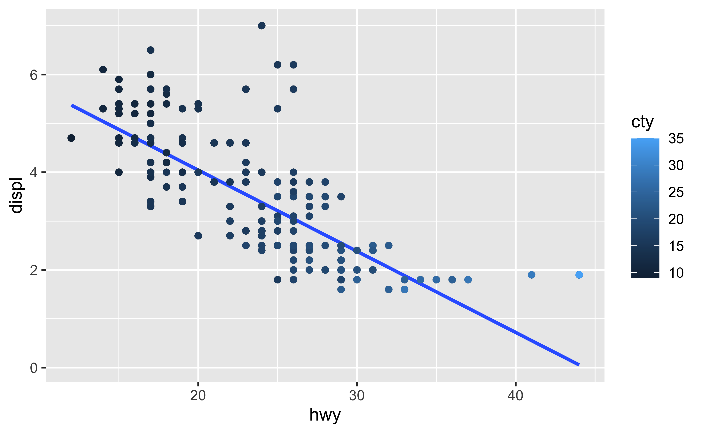
Resposta
p + geom_point(aes(size = cty))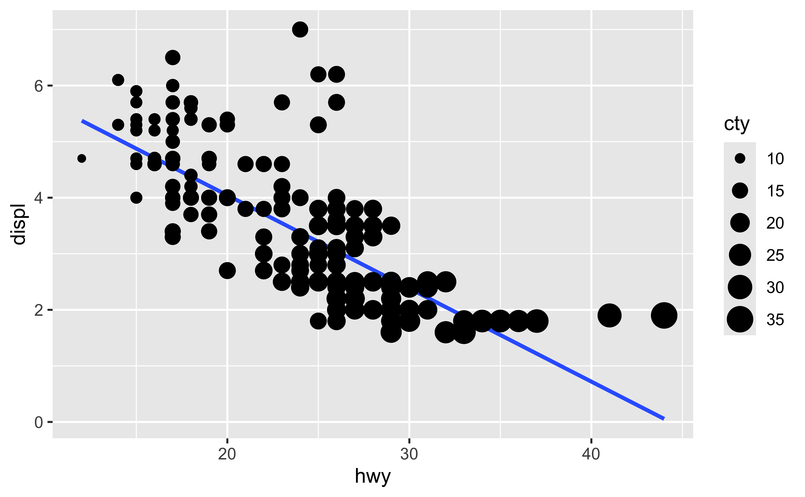
Resposta
p + geom_point(aes(color = cty, size = cty))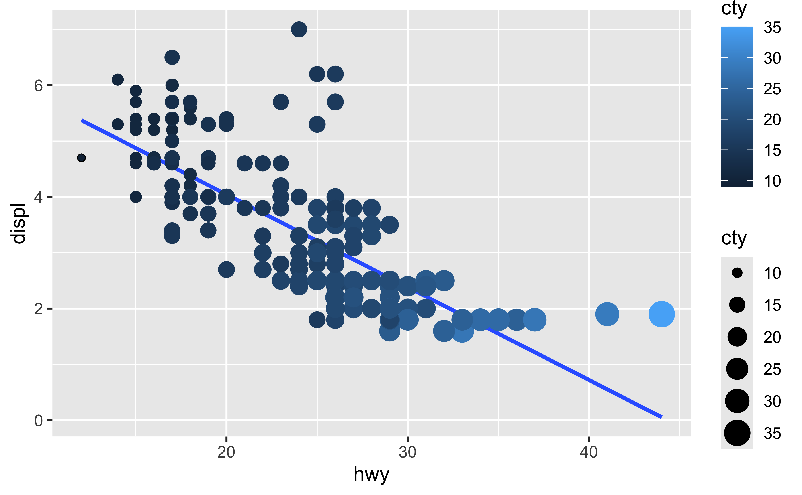
Resposta
p + geom_point(aes(shape = cty))
#> Error in `geom_point()`:
#> ! Problem while computing aesthetics.
#> ℹ Error occurred in the 3rd layer.
#> Caused by error in `scale_f()`:
#> ! A continuous variable cannot be mapped to the shape aesthetic.
#> ℹ Choose a different aesthetic or use `scale_shape_binned()`.Resposta
p + geom_point(aes(color = cty, size = cty,
shape = drv))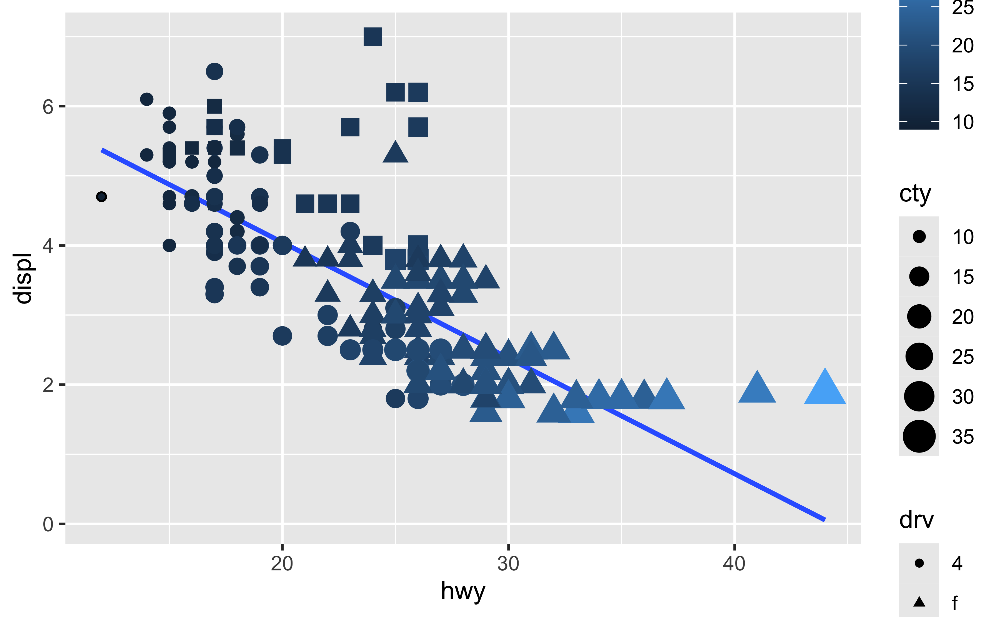
Exercícios
O que acontece se você mapear a mesma variável para várias estéticas?
Resposta
penguins |>
ggplot(
aes(flipper_length_mm, body_mass_g)) +
geom_point(
aes(color = sex, shape = sex)
)
Exercícios
Faça um gráfico de dispersão de bill_depth_mm vs. bill_length_mm. Você deve colorir os pontos por espécies. O que a adição de coloração por espécie revela sobre a relação entre essas duas variáveis? Que tal facetar por espécie?
Resposta
penguins |>
ggplot(
aes(bill_depth_mm, bill_length_mm)) +
geom_point(
aes(color = species)
) +
geom_smooth(
method = "lm", se = F
)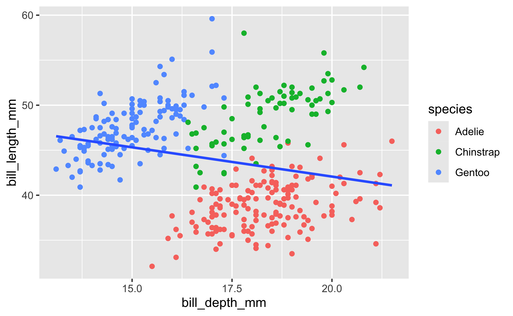
Resposta
penguins |>
ggplot(
aes(bill_depth_mm, bill_length_mm)) +
geom_point() +
geom_smooth(
method = "lm",
se = F
) +
facet_wrap(~ species)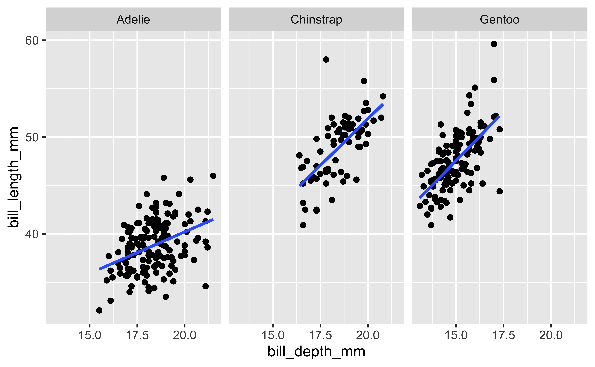
Salvando seus gráficos
ggsave()
- Gráficos ficam salvos no diretório de trabalho
getwd()
- É possível especificar
width(largura) eheight(altura) ?ggsave()
Código
histograma <- penguins |>
ggplot(
aes(body_mass_g)) +
geom_histogram(
) +
theme_classic()
ggsave(filename = "histograma.png", dpi = 300)Resultado